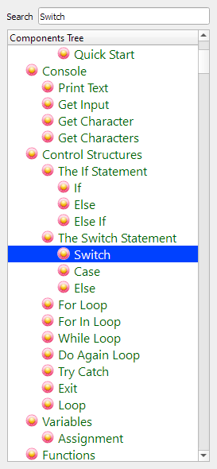
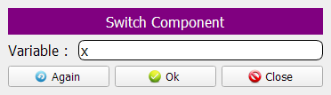
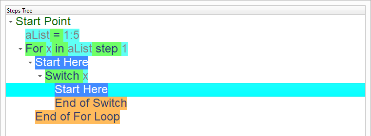
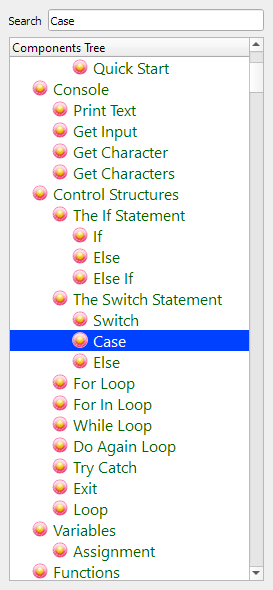
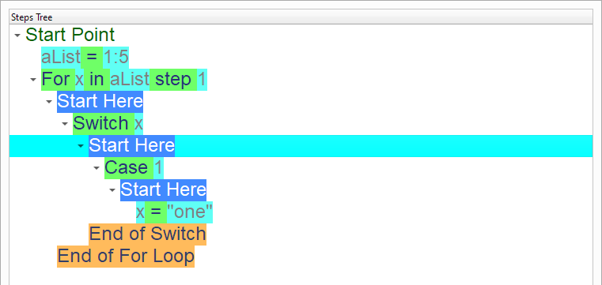

Rich Comments¶
In this chapter we are going to learn how to add comments to our programs
PWCT support rich comments where we can mix between text, colors, lines, and images
Also we can tables use HTML code
Using the Header Component¶
In the begining, No steps exist in our Steps Tree

We will select the (Header) component

In the interaction page we will set the text to (Welcome to Programming!)

Now, we see this comment added to our Steps Tree

Using the New Line Component¶
We will select the (New Line) component

From the Interaction Page, we will select (Draw Line)
Now we see the Line is added to the Steps Tree

Using the Comment Component¶
We will select the (Comment) component
In the text section we will write (My first program using PWCT!)
The comment is added to the Steps Tree
Using the Image Component¶
Time to add an image using the (Image) component
We will type the image file, width & height
The image exist in a relative path (images folder)
The images folder exist in the same folder as our visual source file (program2.pwct)
Now we see the Image is added to our Steps Tree

Printing some text¶
We can use the (Print Text) component

Set the text to (I Love Programming!)

The Print step is added to the Steps Tree
Now we can run the program and see the output in the Output Window